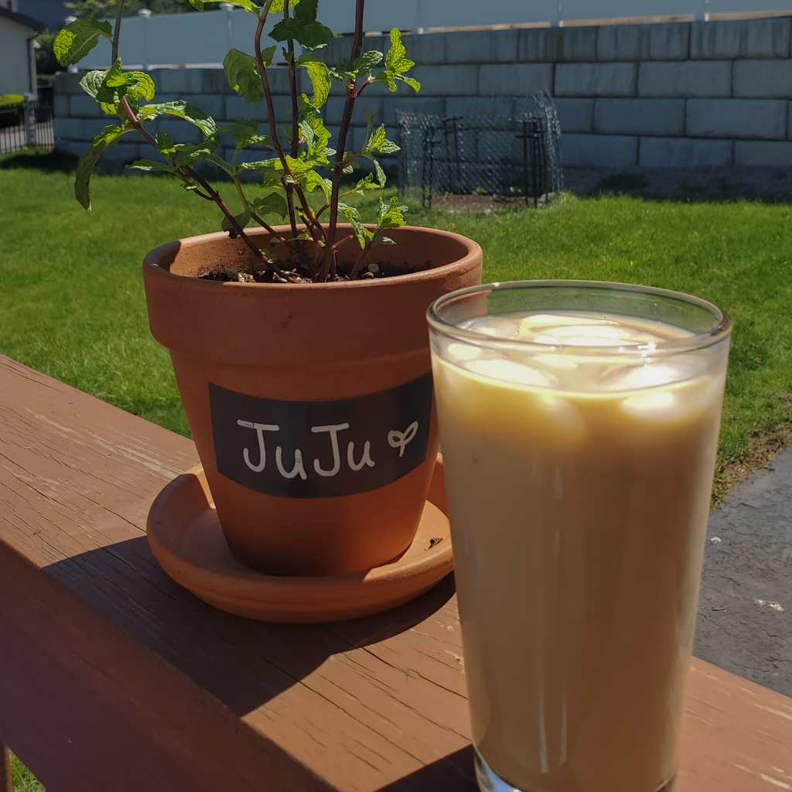
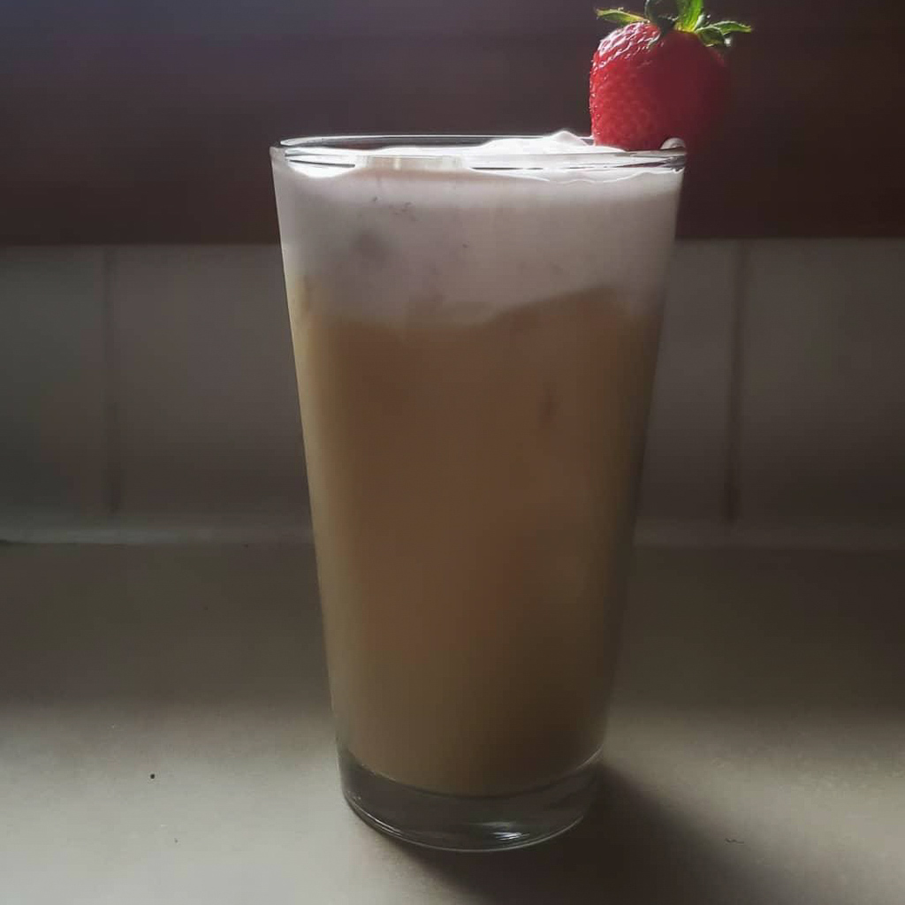
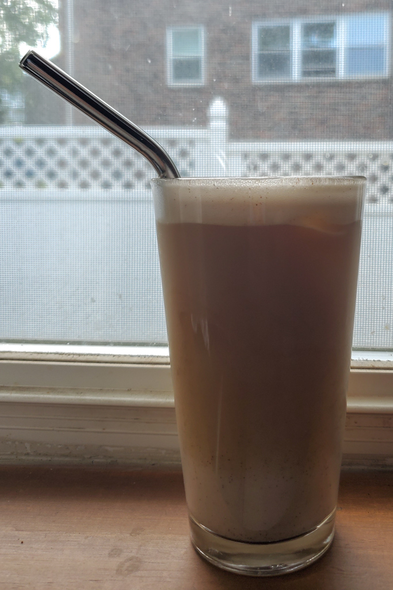
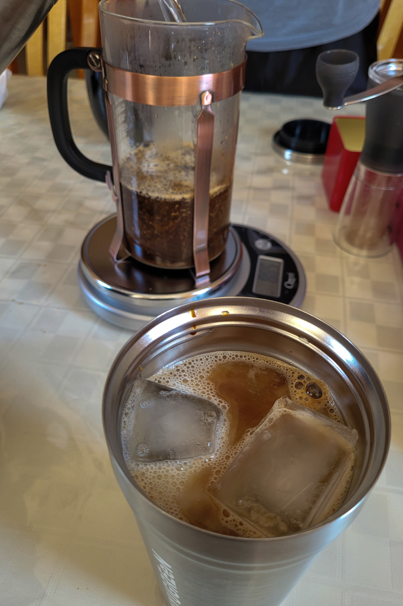
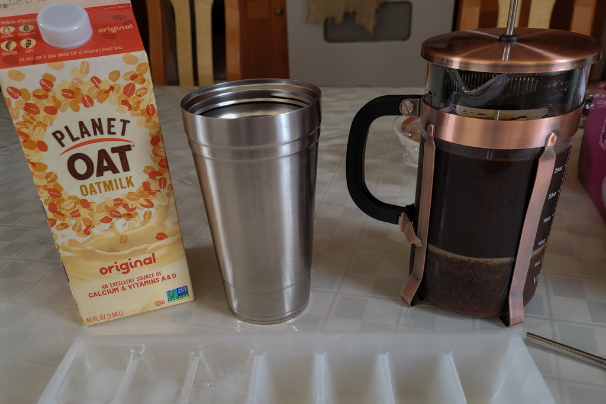
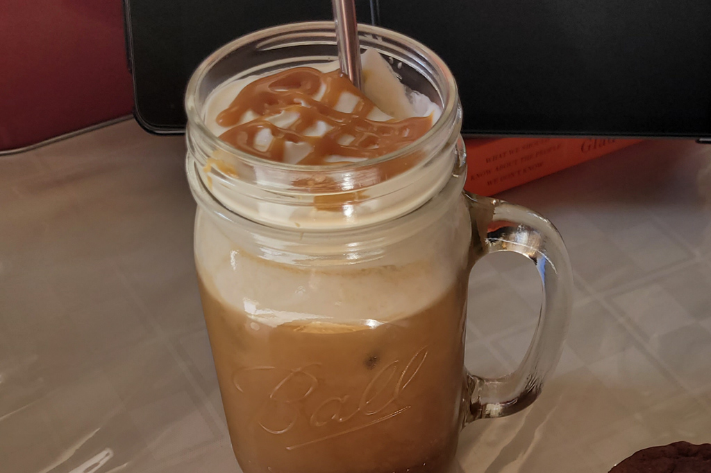

Easy Lattes to Make at Home
May 30 - Written by Bonnie and Emily
A few months ago, we picked up one of the most popular types of drinks in the world--coffee.
More specifically cold brew and lattes! While we were still trying to figure out what types of coffee suits our tastes, we also decided to start making our own lattes at home! Having scrolled through a large number of aesthetically pleasing latte Instagram accounts, we picked out some of our favorite lattes to make that we wanted to share with you all! We made sure that these were some made with some of the most common pantry ingredients so you can start making them right away if you get inspired by our blog post!
Having started her own garden this spring, Bonnie’s gotten a rapidly growing mint plant that she's been harvesting from on a weekly basis. With all the mint leaves that's been piling up in her fridge, she figured there had to be a latte out there that could use up some of them! And indeed there was, an easy to make version of the mojito latte at Philz Coffee is now one of her favorite lattes to make early in the morning!
Since the amount of cream and sugar everyone likes in their coffee varies widely, we decided to forego specific measurements and promote, as we often say--going rogue! This mojito latte is super easy to make with the beautiful concoction of muddled mint leaves, brown sugar, milk, and your choice of coffee! Make sure to muddle your mint leaves with the brown sugar and a little bit of water to get that sweet and minty syrup before adding in your coffee and milk!
Continuing on with the trend of fresh and seasonal produce, one fruit that we’ve been seeing at the supermarket a lot lately are strawberries! With the large quantity of strawberries that were starting to fill up the fridge (along with the mint leaves) Bonnie decided to try a latte recipe seen on Instagram that she's been quite curious about, a strawberry cream latte!
After mashing some strawberries with a little bit of sugar to create a fresh strawberry puree, she used a milk frother to whisk some leftover heavy cream (she was too lazy to actually whisk it). Although the recipe writes to strain the strawberry puree, Bonnie decided to leave the small strawberry chunks in her latte since the strawberry chunks provided a nice texture to the cream. With the completed strawberry cream, pour it on top of your choice of milk and coffee, and voila your latte is complete! If you’re feeling a little fancy you can even add a strawberry on the edge of your cup to get a bite of fresh strawberry to go with your coffee! As always, make sure to mix all the ingredients in your latte thoroughly for the best experience!
Now to introduce one of the simplest pantry lattes to make that Bonnie creates often on any lazy morning, a honey cinnamon latte! We can’t even begin to rave about our love for honey, not only is it a healthier alternative to a simple sugar syrup but its distinct honey flavor brings extra character to any drink! Although we would never question the value honey brings, Bonnie was pretty skeptical about adding cinnamon into her latte. But, when mixing honey and cinnamon together, there couldn’t be any better combination in the world! However, since honey is a thicker consistency, make sure to melt it down with some warm water in order to easily mix with your coffee!
Since most of Bonnie’s lattes are made early in the morning, most of her latte ingredients are roughly eyeballed and made to taste. If she were to estimate, it would be around a 2:1 honey to cinnamon ratio, but can definitely be changed depending on your preference for cinnamon and honey! In terms of milk, you can definitely use regular milk, but since Bonnie has been experimenting with various types of milk, one of her favorite combinations uses oat milk to go with her honey cinnamon latte since oat milk is one of the creamier alternatives to regular milk! Feel free to go rogue and make your preferred combination of ingredient ratios to make this quick and easy latte!
Emily on the other hand wasn’t as fancy as Bonnie was with her lattes and kept them quite simple. The first latte she made was a classic iced mocha. With just one additional ingredient to add to your usual morning coffee, this was by far the simplest one to make. She recommends using a chocolate syrup rather than just cocoa powder as that adds a somewhat strange and bitter taste to the coffee that you’d want to avoid. If you don’t have chocolate syrup, you can make your own using some cocoa powder, sugar, water, and vanilla. It definitely takes a little more work but once you make the syrup, you can store it in the fridge for future use.
The next latte Emily made was her take on Starbucks' new brown sugar shaken oat milk latte. After watching someone make this on Youtube, she figured she’d make her version of it by only making a small amount of the brown sugar syrup and also eyeballing the measurements. Though she did do equal parts sugar to water so that it would be more of a syrup consistency. She also decided to forgo shaking the milk and brown sugar as that felt unnecessary in this situation. Once you have your brown sugar syrup, all you have to do is add in your milk and coffee and that's it! If you’re more of the classic latte drinker, this would be a good option for you as the brown sugar adds sweetness but also a nice molasses flavor that you don’t get with your usual white sugar.
Now for her last latte that she tried, she took her love for caramel and made an iced caramel latte. Having been a fan of Starbucks’ caramel macchiato for a long time, Emily made her version of it by making a caramel sauce that she can add to her coffee whenever she’d like. This one took a little more time and effort as she had to first make the caramel sauce but once you have it, it's very easy to put together. If you don’t want to make your own caramel sauce as it can be quite daunting and challenging, you can also buy a caramel sauce from the store and use that. To make the latte, all you have to do is add in your caramel sauce, and then add the coffee and milk of your choice. There's no need to add any more sugar as the caramel is plenty sweet already!
Emily’s choice in lattes all require some additional prep in the beginning but once you have your desired syrups, all you have to do is add that to your usual morning coffee and you get a whole new drink! Whether you choose to make your own syrups or buy them, making your own lattes at home is much easier than you think.
No matter what your level of experience is with coffee, we hope we inspired you to try making your own lattes at home! You can go with a classic latte or something a little more adventurous but no matter what you choose, it's bound to be good.